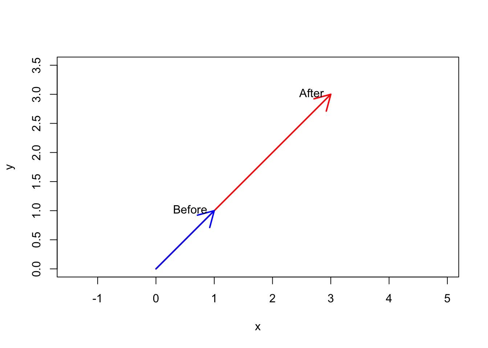
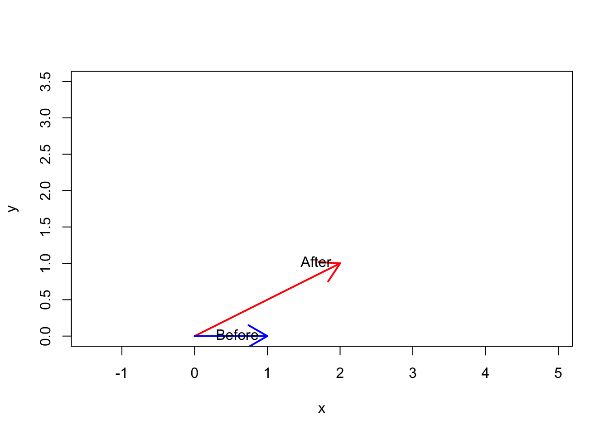
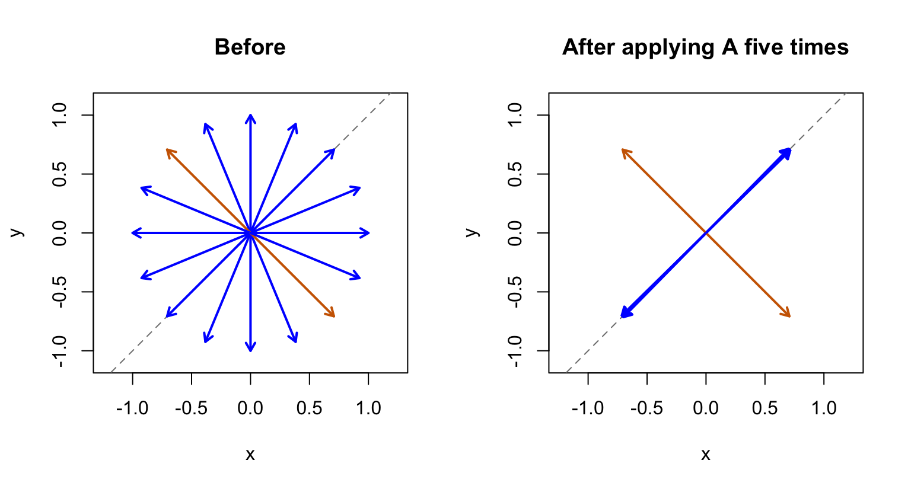
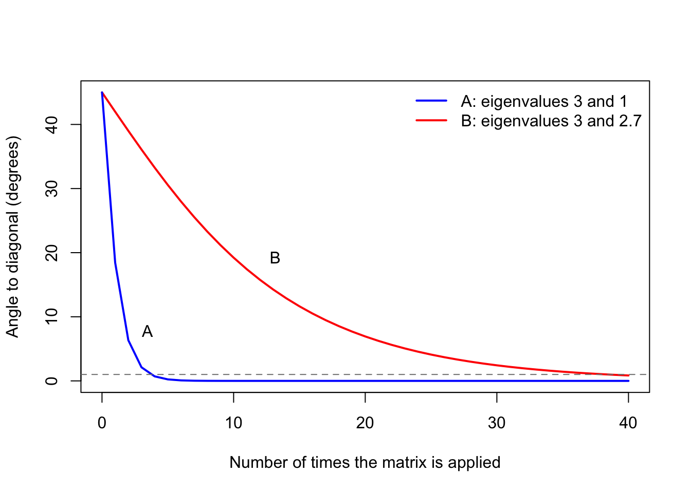

A <- matrix(c(2, 1, 1, 2), nrow = 2)
v <- c(1, 1)
A %*% v [,1]
[1,] 3
[2,] 3September 13, 2026
Eigenvalues and eigenvectors sound intimidating for some people who are not familiar with them. But actually the main idea starts with something simple: an arrow. When a matrix changes an arrow, some arrows stay on the same line. These are eigenvectors, and their eigenvalues describe how they are scaled.
This can be hard to see when a matrix is introduced as a box of numbers the first time we see one. We get busy multiplying entries and lose track of what the calculation does.
But even after I got the picture, one thing still bugged me quite a while. These arrows are actually pretty rare. If you take a typical matrix and apply it to a random arrow, the arrow almost always turns. In the plane, these special arrows fill at most two lines. And yet, eigenvectors seem to show up everythere in datascience. OCA uses them, Markov chains use them, and even Google’s original PageRank scores, which Google used to rank webpages, come from an eigenvector. Most explanations I’ve seen on textbooks focus on how to calculate those eigenvectors, not on why these few special arrows are such a big deal.
That is the question I want to figure out in my first blog post: if almost every arrow turns, what do the few arrows that don’t turn tell us about all the other ones? I’ll start with a small example and a picture that may make the idea easier to follow for you. Then we’ll do a little experiment in R and keep applying the sma matrix over and over, a bit like how a Markow chain moves forward one step at a time, and see where the turning arrows end up.
Let’s use this matrix as an example:
\[ A = \begin{pmatrix}2 & 1 \\ 1 & 2\end{pmatrix}. \]
Think of a vector as an arrow starting at the origin. The vector \((1,1)\) ends one unit right and one unit up. This R code applies the matrix to that arrow. The symbol %*% means matrix multiplication.
The result is \((3,3)\). The arrow becomes three times as long, but still points along the same diagonal. That makes \((1,1)\) an eigenvector of \(A\), with an eigenvalue of 3.
Eigenvectors can also have different lengths.For example, an arrow twice as long along this diagonal still gets stretched by three. Its starting size changes, but its eigenvalue stays the same because the scaling is unchanged.
plot(0, 0, type = "n", xlim = c(0, 3.5), ylim = c(0, 3.5),
xlab = "x", ylab = "y", asp = 1)
arrows(0, 0, 3, 3, col = "red", lwd = 2)
arrows(0, 0, 1, 1, col = "blue", lwd = 2)
text(1, 1, "Before", pos = 2)
text(3, 3, "After", pos = 2)
Now try \((1,0)\). This arrow starts out pointing horizontally.
The result is \((2,1)\), so the arrow tilts upward. It changes direction, which means \((1,0)\) is not an eigenvector of this matrix. The difference is easy to see: one arrow gets longer along its original line, while the other turns.
plot(0, 0, type = "n", xlim = c(0, 3.5), ylim = c(0, 3.5),
xlab = "x", ylab = "y", asp = 1)
arrows(0, 0, 2, 1, col = "red", lwd = 2)
arrows(0, 0, 1, 0, col = "blue", lwd = 2)
text(1, 0, "Before", pos = 2)
text(2, 1, "After", pos = 2)
One detail matters: an arrow is an eigenvector of a particular matrix. A different matrix might turn that same arrow. So the special relationship is between the arrow and the transformation we apply.
The definition puts this observation into one equation:
\[ Av = \lambda v, \qquad v \ne 0. \]
Here, \(v\) is an eigenvector and \(\lambda\) is its eigenvalue. For this particular vector, multiplying by the matrix does the same thing as multiplying by one number.
An eigenvalue of one leaves the arrow unchanged. A negative eigenvalue reverses it along the same line. An eigenvalue of zero collapses it to the origin. The zero vector itself is excluded because it has no direction.
If we keep applying our matrix to \((1,0)\), we get \((2,1)\), then \((5,4)\), then \((14,13)\). The arrow gets closer to the diagonal direction of \((1,1)\). But how close, and how fast? Let’s track it. The code below applies \(A\) six times and measures the angle between the arrow and the diagonal line through \((1,1)\) after each step.
# Angle, in degrees, between an arrow and the diagonal line through (1, 1)
angle_to_diagonal <- function(v) {
# size of the part along (1, 1)
along <- abs(v[1] + v[2]) / sqrt(2)
# size of the part along (1, -1)
across <- abs(v[1] - v[2]) / sqrt(2)
atan2(across, along) * 180 / pi
}
v <- c(1, 0)
trajectory <- data.frame()
for (step in 0:6) {
trajectory <- rbind(trajectory,
data.frame(step = step, x = v[1], y = v[2],
angle = angle_to_diagonal(v)))
v <- as.vector(A %*% v)
}
knitr::kable(trajectory, digits = 2,
col.names = c("Step", "x", "y", "Angle to diagonal (degrees)"))| Step | x | y | Angle to diagonal (degrees) |
|---|---|---|---|
| 0 | 1 | 0 | 45.00 |
| 1 | 2 | 1 | 18.43 |
| 2 | 5 | 4 | 6.34 |
| 3 | 14 | 13 | 2.12 |
| 4 | 41 | 40 | 0.71 |
| 5 | 122 | 121 | 0.24 |
| 6 | 365 | 364 | 0.08 |
The angle starts at 45 degrees and drops below a tenth of a degree after just six steps. And if you look at the numbers closely, there’s a pattern. After the first step, each angle is about three times smaller than the one before it: 18.43, 6.34, 2.12, 0.71. Why three?
That happens because the part along the eigenvector \((1,1)\) grows faster than the other part. Here’s what I mean: we can split any arrow into two pieces: one piece along \((1,1)\) and one piece along the other eigenvector of \(A\), which is \((1,-1)\). For example, \((1,0)\) is just half of \((1,1)\) plus half of \((1,-1)\). Every time we apply \(A\), the \((1,1)\) piece gets multiplied by its eigenvalue, 3, and the \((1,-1)\) piece gets multiplied by its eigenvalue, 1, so it doesn’t change at all. After \(k\) steps we get
\[ A^k \begin{pmatrix}1 \\ 0\end{pmatrix} = \frac{3^k}{2}\begin{pmatrix}1 \\ 1\end{pmatrix} + \frac{1}{2}\begin{pmatrix}1 \\ -1\end{pmatrix}. \]
Every step, the \((1,1)\) piece gets three times bigger compared to the other piece, so the arrow leans more and more toward the diagonal. That’s where the three comes from. It’s just the ratio of the two eigenvalues, 3 divided by 1.
At this point I wondered if \((1,0)\) was just a lucky choice. To check, I tried sixteen arrows pointing in all different directions. I applied \(A\) to each of them five times, and then shrank every arrow back to length one so we only compare directions.
directions <- seq(0, 337.5, by = 22.5) * pi / 180
# one arrow per column
before <- rbind(cos(directions), sin(directions))
after <- before
for (step in 1:5) after <- A %*% after
# rescale to length one
after <- sweep(after, 2, sqrt(colSums(after^2)), "/")
# the two arrows that start exactly along the other eigenvector, (1, -1)
on_other_line <- abs(before[1, ] + before[2, ]) < 1e-8
arrow_col <- ifelse(on_other_line, "#CD6600", "blue")
par(mfrow = c(1, 2))
panels <- list(before, after)
titles <- c("Before", "After applying A five times")
for (i in 1:2) {
plot(0, 0, type = "n", xlim = c(-1.1, 1.1), ylim = c(-1.1, 1.1),
xlab = "x", ylab = "y", asp = 1, main = titles[i])
abline(0, 1, lty = 2, col = "gray50")
arrows(0, 0, panels[[i]][1, ], panels[[i]][2, ],
col = arrow_col, lwd = 2, length = 0.08)
}
It wasn’t luck. Fourteen of the sixteen arrows end up on the diagonal line. Some point toward \((1,1)\) and some toward \((-1,-1)\), but it’s the same line. The only two that don’t are the orange ones. An arrow starting exactly along the other eigenvector, \((1,-1)\), would stay unchanged instead, because its eigenvalue is 1. But these two only survive because they start exactly on that line. If you push one of them even a tiny bit off of it, that tiny piece along \((1,1)\) gets tripled every step, and eventually it takes over too.
If the three really comes from dividing the two eigenvalues, then the speed should change when the eigenvalues get closer together. I wanted to check this, so I made a second matrix, \(B\). It has the same eigenvectors as \(A\), and its biggest eigenvalue is still 3. The only difference is that its other eigenvalue is 2.7 instead of 1:
\[ B = \begin{pmatrix}2.85 & 0.15 \\ 0.15 & 2.85\end{pmatrix}. \]
[1] 3 1[1] 3.0 2.7R confirms it: \(A\) has eigenvalues 3 and 1, and \(B\) has 3 and 2.7. Now let’s start both matrices from \((1,0)\), apply each one 40 times, and watch the angle.
track_angle <- function(M, v, n_steps) {
angles <- numeric(n_steps + 1)
for (k in 0:n_steps) {
angles[k + 1] <- angle_to_diagonal(v)
v <- as.vector(M %*% v)
}
angles
}
steps <- 0:40
angle_A <- track_angle(A, c(1, 0), 40)
angle_B <- track_angle(B, c(1, 0), 40)
# First step at which the arrow is within one degree of the diagonal
c(A = min(steps[angle_A < 1]), B = min(steps[angle_B < 1])) A B
4 39 plot(steps, angle_B, type = "l", col = "red", lwd = 2, ylim = c(0, 45),
xlab = "Number of times the matrix is applied",
ylab = "Angle to diagonal (degrees)")
lines(steps, angle_A, col = "blue", lwd = 2)
abline(h = 1, lty = 2, col = "gray50")
text(2.3, 7.5, "A", pos = 4)
text(12, 19, "B", pos = 4)
legend("topright", legend = c("A: eigenvalues 3 and 1", "B: eigenvalues 3 and 2.7"),
col = c("blue", "red"), lwd = 2, bty = "n")
This was the part that surprised me the most. Both matrices stretch \((1,1)\) by exactly 3, so if you only looked at the biggest eigenvalue, you would think they behave the same. They don’t. With \(A\), the arrow is within one degree of the diagonal after 4 steps. With \(B\), it takes 39 steps, almost ten times longer. The reason is the same as before: each step, the \((1,1)\) piece gains on the other piece by the ratio of the eigenvalues. For \(A\) that ratio is \(3/1 = 3\), but for \(B\) it is only \(3/2.7 \approx 1.11\). That’s why, with \(B\), the arrow keeps “remembering” where it started for so long.
Eigenvectors show us special directions within a transformation. Eigenvalues tell us what happens along those directions. Together, they make it easier to understand how a system changes over time. That’s the textbook summary, and it’s true, but it felt pretty abstract to me until I actually ran these experiments. Two things finally clicked.
The first is that eigenvectors are not just weird exceptions. I used to think of them as the few arrows that happen not to turn. But if you apply the same matrix again and again, almost every arrow ends up lining up with the eigenvector that has the biggest eigenvalue. So the eigenvector is basically telling you where everything is heading. I think this is why eigenvectors show up in Markov chains and PageRank. In both cases, what we care about is where a process ends up after many steps, and that answer is an eigenvector. Even for PCA, one classic way to find the first principal component, called the power method, uses the same trick of multiplying by a matrix (the covariance matrix) over and over.
The second is that computing the eigenvalues isn’t enough. We should also compare them. The biggest eigenvalue tells us which direction wins in the end, but how close the second one is to the biggest tells us how long that takes. With 3 and 1 it took 4 steps; with 3 and 2.7 it took 39. I find it helpful to think about this with a labor market example. In a simple model where workers move between having a job and being unemployed each month, this ratio decides whether a jump in unemployment fades in a few months or sticks around for a long time.
One thing we need to be careful about, though: this only works when one eigenvalue is strictly bigger in size than all the others. For example, a matrix that rotates every arrow by 90 degrees has no real eigenvectors at all, so the arrows just keep spinning around and never settle on any line.
So, back to my question. The few arrows that don’t turn matter because they tell us where all the other arrows are going, and the eigenvalues tell us how fast they get there. For me, that’s a much more useful way to think about eigenvectors than just remembering \(Av = \lambda v\).